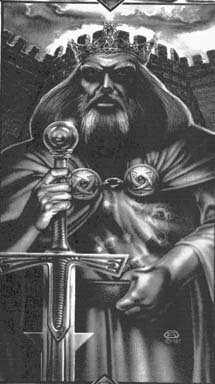

Оберон(Судя по всему мертв, погиб, перерисовывая Лабиринта). Отец "старшего" поколение Амберитов. Символ - пятиконечная корона Амбера. Немногое известно об отце нынешней королевской семьи. То, что известно, рассказано его детьми со всеми искажениями детских воспоминаний. Оберон был весьма строгим отцом, но также обладал абсолютно огромными способностями обучать своих детей тому, чему он хотел их научить. Он был великолепным тактиком, как в военном деле, так и в политике, и с помощью Дворкина несколько поднатаскал в стратегии. Он любил жизнь почти так же как любил женщин. А женщин он любил так же сильно, как Амбер. Во многих смыслах Оберон сам был Амбером и умер, как герой, чтобы спасти его. |
 |